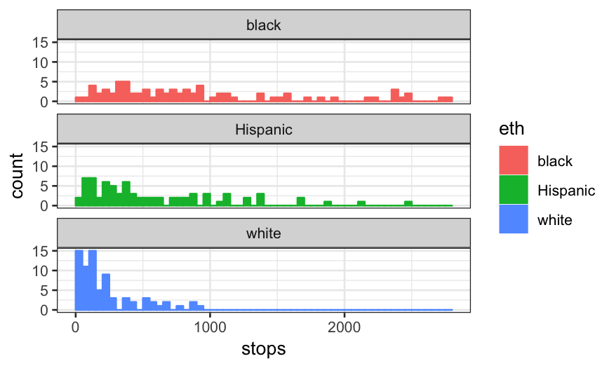
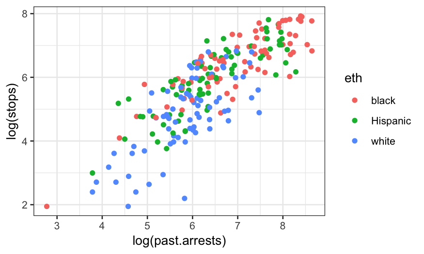
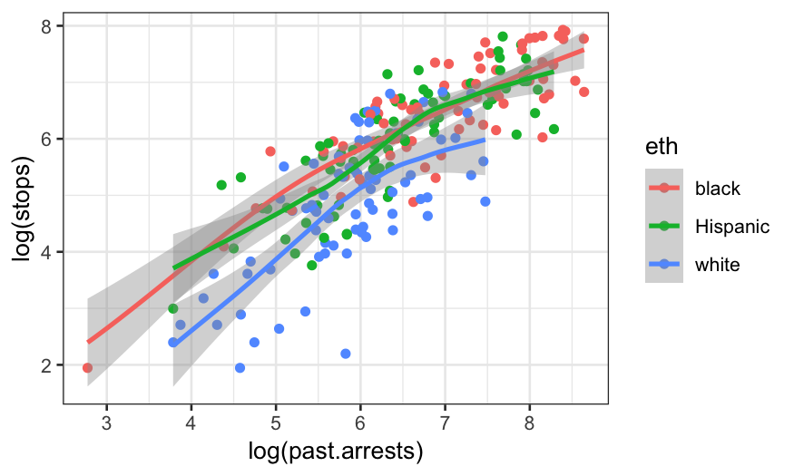
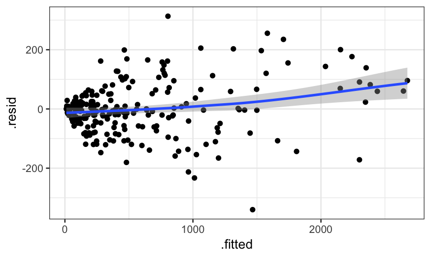
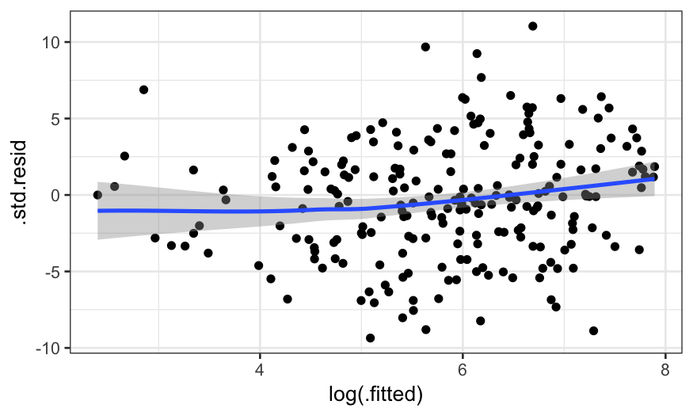
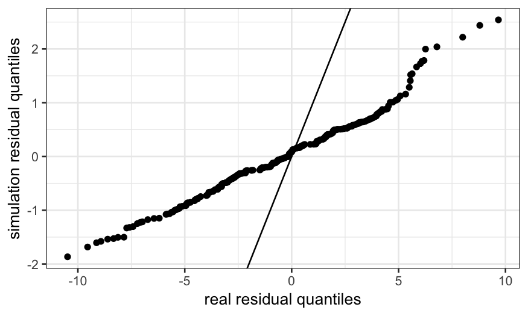
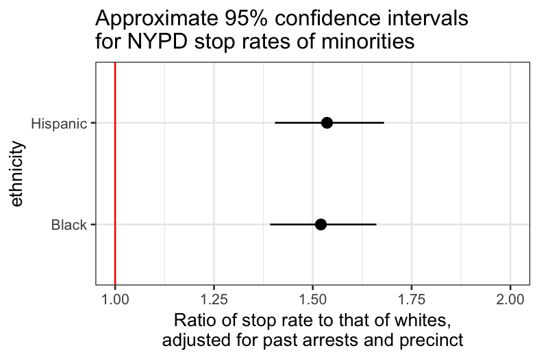

Stat 470/670 Lecture 23: Count responses and Poisson regression
Julia Fukuyama
November 6, 2018
Stop and frisk data
Gelman and Hill have data on police stops in New York City in 1998--1999, during Giuliani's mayoralty. There have been accusations that some ethnic groups have been stopped at rates not justified by either their arrest rate or their location (as measured by precinct.)
The data, with noise added for confidentiality, is at http://www.stat.columbia.edu/~gelman/arm/examples/police/frisk_with_noise.dat
The data gives counts of police stops for all combinations of
precinct: 75 total
eth: Ethnicity of the person stopped, three possibilities (1 = black, 2 = Hispanic, 3 = white), and
crime: The type of crie, four possibilities (1 = violent, 2 = weapons, 3 = property, and 4 = drug)
This gives a total of \(75 \times 3 \times 4 = 900\) rows.
There are two other variables in the data set:
pop: population of the ethnic group within the precinct, and
past.arrests: the number of arrests of people in that ethnic group in that precinct for that type of crime in 1997.
The first few rows of this file are a description, so we tell R to skip these when reading the data.
frisk = read.table("http://www.stat.columbia.edu/~gelman/arm/examples/police/frisk_with_noise.dat", skip = 6, header = TRUE)
nrow(frisk)
## [1] 900
summary(frisk)
## stops pop past.arrests precinct eth
## Min. : 0 Min. : 321 Min. : 0.0 Min. : 1 Min. :1
## 1st Qu.: 26 1st Qu.: 6844 1st Qu.: 53.0 1st Qu.:19 1st Qu.:1
## Median : 72 Median : 18004 Median : 124.0 Median :38 Median :2
## Mean : 146 Mean : 30105 Mean : 262.8 Mean :38 Mean :2
## 3rd Qu.: 173 3rd Qu.: 46669 3rd Qu.: 287.5 3rd Qu.:57 3rd Qu.:3
## Max. :1755 Max. :184345 Max. :2655.0 Max. :75 Max. :3
## crime
## Min. :1.00
## 1st Qu.:1.75
## Median :2.50
## Mean :2.50
## 3rd Qu.:3.25
## Max. :4.00
Having numerical ethnicity is annoying, so recode:
library(dplyr)
frisk$eth = recode_factor(frisk$eth, `1` = "black", `2` = "Hispanic", `3` = "white")
For the purposes of this lecture, we'll ignore the type of crime, and aggregate the number of stops and past arrests over all four types. If you're interested though, you should try a model that includes type of crime as well and see if anything changes.
Aggregating in this way gives us 225 rows (75 precincts by three ethnic groups):
frisk.sum = frisk %>%
group_by(precinct, eth) %>%
summarise(stops = sum(stops), past.arrests = sum(past.arrests), pop = mean(pop))
nrow(frisk.sum)
## [1] 225
summary(frisk.sum)
## precinct eth stops past.arrests
## Min. : 1 black :75 Min. : 7.0 Min. : 16
## 1st Qu.:19 Hispanic:75 1st Qu.: 133.0 1st Qu.: 312
## Median :38 white :75 Median : 385.0 Median : 571
## Mean :38 Mean : 584.1 Mean :1051
## 3rd Qu.:57 3rd Qu.: 824.0 3rd Qu.:1467
## Max. :75 Max. :2771.0 Max. :5667
## pop
## Min. : 321
## 1st Qu.: 6844
## Median : 18004
## Mean : 30105
## 3rd Qu.: 46669
## Max. :184345
Let's first draw some pictures.
ggplot(frisk.sum, aes(x = stops, color = eth, fill = eth)) +
geom_histogram(breaks = seq(0, 2800, 50)) + facet_wrap(~eth, ncol = 1)

Quite clearly, the distributions of stops for black and Hispanic people are very different from the distribution for white people, though there may be multiple explanations for this.
Let's look at the relationship of stops with past arrests. Because of skewness, we log both variables.
ggplot(frisk.sum, aes(x = log(past.arrests), y = log(stops), color = eth)) + geom_point()

There's certainly a relationship. The question is whether the relationship between the two variables is sufficient to explain the differences between the stops of the three ethnic groups. You could get at this just by adding smoother for the three groups:
ggplot(frisk.sum, aes(x = log(past.arrests), y = log(stops), group = eth, color = eth)) + geom_point() + geom_smooth(method.args = list(degree = 1))
## `geom_smooth()` using method = 'loess' and formula 'y ~ x'

Since this is an important topic, however, we should be a bit more careful and construct a model.
Poisson regression
We'll model this data using (at first) Poisson regression, another form of generalized linear model.
Poisson regression is used instead of standard linear regression when the response variable is a count (0, 1, 2, etc.) instead of a real number.
You could use standard linear regression here (if you put the numbers into lm in R it will give you results), but Poisson regression can be better because counts tend to have a Poisson distribution, and Poisson distributed variables have a fixed relationship between the mean and the variance.
If \(y \sim \text{Pois}(\lambda)\), then \(E(y) = \lambda\) and \(\text{Var}(y) =\lambda\). This relationship is inconsistent with the homoskedasticity assumptions of linear regression.
In a standard Poisson regression, the response has a Poisson distribution with the log of the expected value given by a linear function of the predictors.
In the single-variable case: \[
\log(E[Y \mid x]) = \beta_0 + \beta_1 x
\] and \[
Y \sim \text{Pois}(E[Y \mid x])
\]
We'll start off with a Poission regression model that's much too simple, and build up to a more useful one.
The simplest model just treats each number of stops as a realization of a Poisson random variable.
constant.glm = glm(stops ~ 1, family = poisson, data = frisk.sum)
summary(constant.glm)
##
## Call:
## glm(formula = stops ~ 1, family = poisson, data = frisk.sum)
##
## Deviance Residuals:
## Min 1Q Median 3Q Max
## -33.049 -22.552 -8.788 9.343 65.227
##
## Coefficients:
## Estimate Std. Error z value Pr(>|z|)
## (Intercept) 6.370053 0.002758 2309 <2e-16 ***
## ---
## Signif. codes: 0 '***' 0.001 '**' 0.01 '*' 0.05 '.' 0.1 ' ' 1
##
## (Dispersion parameter for poisson family taken to be 1)
##
## Null deviance: 123333 on 224 degrees of freedom
## Residual deviance: 123333 on 224 degrees of freedom
## AIC: 125041
##
## Number of Fisher Scoring iterations: 5
By now you might be sick of all the cruft that gets displayed when we use summary() on a GLM. Let's use Gelman et al.'s display() function in package arm instead.
# install.packages("arm")
library(arm)
display(constant.glm)
## glm(formula = stops ~ 1, family = poisson, data = frisk.sum)
## coef.est coef.se
## (Intercept) 6.37 0.00
## ---
## n = 225, k = 1
## residual deviance = 123332.5, null deviance = 123332.5 (difference = 0.0)
This pares away most of the low value information. We see the coefficent estimate (on the log scale) is 6.37, which gives \(e^{6.37} = 584\) on the original scale. That is, the number of stops for each ethnic group within each precinct is modeled as a random variable with distribution
\[
\textrm{Poisson}(584).
\]
The other number to keep track of is the (residual) deviance. Low deviance is good, as long as you're not overfitting. In particular, every time you add a degree of freedom, you should expect to reduce the deviance by 1 if you're just adding random noise. So if you're not overfitting when you fit a complex model, you should expect to reduce the deviance by more than you increase the degrees of freedom.
Now this model is obviously inadequate. We might, for example, think that the number of stops for an ethnic groups in a precinct should be proportional to the number of arrests for that ethnicity-precinct (though this is controversial.) In a GLM, we can model this using an offset:
offset.glm = glm(stops ~ 1, family = poisson, offset = log(past.arrests), data = frisk.sum)
display(offset.glm)
## glm(formula = stops ~ 1, family = poisson, data = frisk.sum,
## offset = log(past.arrests))
## coef.est coef.se
## (Intercept) -0.59 0.00
## ---
## n = 225, k = 1
## residual deviance = 46120.3, null deviance = 46120.3 (difference = 0.0)
Since the linear predictor is on the log scale, the offset also has to be logged. This gives the following model for each precinct/race combination:
\[
\log[E(\textrm{stops}|\textrm{past arrests})] = -0.59 + \log(\textrm{past arrests})
\] or (taking the exponential of both sides) \[
E(\textrm{stops}|\textrm{past arrests}) = e^{-0.59 + \log(\textrm{past arrests})} = 0.56 \times \textrm{past arrests}
\]
To check this, we look at the predicted number of stops for precinct/race combinations with 10, 100, and 1000 past arrests respectively:
augment(offset.glm,
newdata = data.frame(past.arrests = c(10, 100, 1000)),
type.predict = "response")
## # A tibble: 3 x 3
## past.arrests .fitted .se.fit
## * <dbl> <dbl> <dbl>
## 1 10 5.56 0.0153
## 2 100 55.6 0.153
## 3 1000 556. 1.53
Our model has a much lower deviance than the constant model, so we've improved the fit by a lot.
Now we want to see what happens if we add ethnic group as a predictor. Ethnic group is categorical, so we use it as a factor.
eth.glm = glm(stops ~ eth, family = poisson, offset = log(past.arrests), data = frisk.sum)
display(eth.glm)
## glm(formula = stops ~ eth, family = poisson, data = frisk.sum,
## offset = log(past.arrests))
## coef.est coef.se
## (Intercept) -0.59 0.00
## ethHispanic 0.07 0.01
## ethwhite -0.16 0.01
## ---
## n = 225, k = 3
## residual deviance = 45437.4, null deviance = 46120.3 (difference = 682.9)
Note that "past arrests" doesn't have a coefficient: the model assumes that expected stops are proportional to past arrests (where the constant of proportionality may depend on other stuff.) The deviance has dropped substantially again. On the log scale, we have additive terms for the offset and for ethnicity (relative to black, which is taken as the baseline due to alphabetical order.) On the original scale, the terms are multiplicative, and we can combine the offset and ethnicity terms to get a coefficient for each ethnicity. That is, the model is now
\[
E(\textrm{stops}) = \textrm{multiplier for ethnic group} \times \textrm{past arrests}
\]
where the multipliers are
eth.co = coefficients(eth.glm)
multipliers = exp(c(eth.co[1], eth.co[1] + eth.co[2], eth.co[1] + eth.co[3]))
print(multipliers)
## (Intercept) (Intercept) (Intercept)
## 0.5553894 0.5957836 0.4725238
eth.coef = tidy(eth.glm)$estimate
multipliers = exp(c(eth.coef[1],
eth.coef[1] + eth.coef[2],
eth.coef[1] + eth.coef[3]))
multipliers
## [1] 0.5553894 0.5957836 0.4725238
for black, Hispanic, and white respectively. We can check this using augment():
augment(eth.glm,
newdata = data.frame(past.arrests = 1000, eth = c("black", "Hispanic", "white")),
type.predict = "response")
## # A tibble: 3 x 4
## past.arrests eth .fitted .se.fit
## * <dbl> <fct> <dbl> <dbl>
## 1 1000 black 555. 2.10
## 2 1000 Hispanic 596. 2.82
## 3 1000 white 473. 3.63
So far we have shown that black and Hispanic people were stopped at a proportionately higher fraction of their arrest rate compared to white people.
However, as the data isn't from a randomized experiment, there may be confounding --- it could be that black and Hispanic people generally live in precincts with higher stop rates. (Whether this is in itself evidence of bias is again, controversial.)
Since this is exploratory work, we won't attempt to prove cause-and-effect, but we'll see whether we can simply explain the results by including a precinct variable. If we can, then the NYPD might argue that minorities are only stopped more often because they, perhaps coincidentally, tend to live in precincts with high stop rates.
precinct.glm = glm(stops ~ eth + factor(precinct), family = poisson, offset = log(past.arrests), data = frisk.sum)
We won't print out the full results because we now have a coefficient for each precinct. Let's just first check the deviance has gone down significantly:
deviance(eth.glm)
## [1] 45437.35
deviance(precinct.glm)
## [1] 3427.14
Now look at the first few coefficients (and their standard errors):
tidy(precinct.glm)
## # A tibble: 77 x 5
## term estimate std.error statistic p.value
## <chr> <dbl> <dbl> <dbl> <dbl>
## 1 (Intercept) -1.38 0.0510 -27.0 7.21e-161
## 2 ethHispanic 0.0102 0.00680 1.50 1.34e- 1
## 3 ethwhite -0.419 0.00943 -44.4 0.
## 4 factor(precinct)2 -0.149 0.0740 -2.01 4.41e- 2
## 5 factor(precinct)3 0.560 0.0568 9.87 5.87e- 23
## 6 factor(precinct)4 1.21 0.0575 21.0 3.03e- 98
## 7 factor(precinct)5 0.283 0.0568 4.98 6.34e- 7
## 8 factor(precinct)6 1.14 0.0580 19.7 1.72e- 86
## 9 factor(precinct)7 0.218 0.0643 3.39 6.96e- 4
## 10 factor(precinct)8 -0.391 0.0569 -6.87 6.51e- 12
## # ... with 67 more rows
After controlling for precinct, the differences between the white and minority coefficients becomes even bigger.
Checking the model
As usual, our first plot for checking the model is to plot the residuals against the fitted values on the response (original) scale, and see what happens.
precinct.glm.df = augment(precinct.glm, type.predict = "response", type.residuals = "response")
ggplot(precinct.glm.df, aes(x = .fitted, y = .resid)) + geom_point() + geom_smooth(span = 1, method.args = list(degree = 1))
## `geom_smooth()` using method = 'loess' and formula 'y ~ x'

The smoother we added isn't flat, but that could just be because the residuals are heteroskedastic: they spread out dramatically. The heteroskedasticity is not a bug: Poissons are supposed to be heteroskedastic. Recall that a Poisson\((\lambda)\) random variable has variance \(\lambda\) and standard deviation \(\sqrt{\lambda}\). So the typical size of the residuals should go up as the square root of the fitted value.
To hopefully remove this effect, we create standardized residuals by dividing the raw residuals by the square root of the fitted value. We plot these against the log fitted values to reduce the distortions caused by skewness.
precinct.std.resid = precinct.glm.df$.resid / sqrt(precinct.glm.df$.fitted)
precinct.glm.df$.std.resid = precinct.std.resid
ggplot(precinct.glm.df, aes(x = log(.fitted), y = .std.resid)) + geom_point() + geom_smooth(span = 1, method.args = list(degree = 1))
## `geom_smooth()` using method = 'loess' and formula 'y ~ x'

Note that there are other kinds of residuals that you can plot for glms, (try ?residuals.glm to see them). The idea behind the other types is roughly the same as what we've done here, they aim to standardize residuals according to the variance expected in the residuals by the fit.
This is better, though far from perfect. There's still some nonlinearity left in the smoother, though the amount is relatively small. If prediction was the goal, a nonparametric model would probably provide an improvement.
Overdispersion
If we care about more than just the conditional expectation, however, we find a bigger problem. If the Poisson model were correct, the standardized residuals should be on a similar scale to the standard normal -- that is, the vast majority should be within \(\pm 2\). From the previous graph, that's clearly not the case.
We need to measure the overdispersion in the data. We could do a formal \(\chi^2\) test for overdispersion, but instead, let's calculate the typical size of the squared residuals. (When we "average", we divide the sum by the residual degrees of freedom.) If the Poisson model is correct, this should be close to 1. If it's much more than 1, we need a better model.
overdispersion = sum(precinct.std.resid^2) / df.residual(precinct.glm)
overdispersion
## [1] 21.88505
This is much more than 1. In fact, this happens a lot with counts -- the data is often more dispersed than the Poisson model.
How bad is it?
We know there are problems with our model. But are they so bad that we can't draw conclusions from it?
One simple way of checking is to simulate a fake set of data, and see if it closely resembles the actual set.
For a Poisson model, this is easy. We know according to the model, each observation is a realization of a Poisson random variable, whose parameter is given by the fitted value. Then we can use rpois() to do simulation and do numerical summaries and plots.
precinct.fits = augment(precinct.glm, type.predict = "response")$.fitted
sim1 = rpois(nrow(frisk.sum), lambda = precinct.fits)
summary(frisk.sum$stops)
## Min. 1st Qu. Median Mean 3rd Qu. Max.
## 7.0 133.0 385.0 584.1 824.0 2771.0
summary(sim1)
## Min. 1st Qu. Median Mean 3rd Qu. Max.
## 9.0 158.0 379.0 583.6 817.0 2728.0
sim.df = data.frame(frisk.sum, sim1)
library(tidyr)
sim.long = sim.df %>% gather(type, number, c("stops", "sim1"))
ggplot(sim.long, aes(x = number)) + geom_histogram(breaks = seq(0, 2800, 50)) + facet_wrap(~type, ncol = 1)
If we look at the histograms, there doesn't seem to be much difference. But what happens if we fit a model to the simulated data and look at its residuals? We'll find these and do a two-sample QQ plot of them against the original residuals.
precinct.sim = glm(sim1 ~ eth + factor(precinct), family = poisson, offset = log(past.arrests), data = sim.df)
resid.df = data.frame(real.resid = augment(precinct.glm, type.predict = "response")$.resid,
sim.resid = augment(precinct.sim, type.predict = "response")$.resid)
ggplot(resid.df) +
stat_qq(aes(sample = sim.resid),
distribution = function(p) quantile(resid.df$real.resid, probs = p)) +
geom_abline(intercept = 0, slope = 1) +
xlab("real residual quantiles") + ylab("simulation residual quantiles")

If the model were correct, this QQ plot should be close to a line through the origin with slope 1, and this is not. The real residuals are much more spread out/have much larger variance than the residuals in the simulation.
The simulation here is overkill, since we understand the Poisson fairly well and already know the data is overdispersed. However, the more complicated your model gets, the more useful this kind of simulation is as a sanity check.
Fixing overdispersion
The quickest fix is to use the quasipoisson family instead of the Poisson.
precinct.quasi = glm(stops ~ eth + factor(precinct), family = quasipoisson, offset = log(past.arrests), data = frisk.sum)
tidy(precinct.quasi)
## # A tibble: 77 x 5
## term estimate std.error statistic p.value
## <chr> <dbl> <dbl> <dbl> <dbl>
## 1 (Intercept) -1.38 0.239 -5.78 4.33e- 8
## 2 ethHispanic 0.0102 0.0318 0.320 7.49e- 1
## 3 ethwhite -0.419 0.0441 -9.49 5.49e-17
## 4 factor(precinct)2 -0.149 0.346 -0.430 6.68e- 1
## 5 factor(precinct)3 0.560 0.266 2.11 3.66e- 2
## 6 factor(precinct)4 1.21 0.269 4.50 1.38e- 5
## 7 factor(precinct)5 0.283 0.266 1.06 2.89e- 1
## 8 factor(precinct)6 1.14 0.272 4.21 4.35e- 5
## 9 factor(precinct)7 0.218 0.301 0.725 4.70e- 1
## 10 factor(precinct)8 -0.391 0.266 -1.47 1.44e- 1
## # ... with 67 more rows
Note that the coefficients look the same as they were in the standard Poisson case. However, their standard errors have been inflated by the square root of their overdispersion. We can confirm that the fitted values haven't changed:
precinct.fitted = augment(precinct.glm, type.predict = "response")$.fitted
quasi.fitted = augment(precinct.quasi, type.predict = "response")$.fitted
summary(quasi.fitted - precinct.fitted)
## Min. 1st Qu. Median Mean 3rd Qu. Max.
## 0 0 0 0 0 0
So the quasipoission doesn't change the fit, only the variance and the standard errors.
For interpretation, it may be useful to refit the model changing the order of levels in eth to use whites as a baseline.
frisk.sum.relev = frisk.sum %>% mutate(eth.releveled = factor(eth, levels = c("white", "black", "Hispanic")))
precinct.quasi2 = glm(stops ~ eth.releveled + factor(precinct),
family = quasipoisson, offset = log(past.arrests),
data = frisk.sum.relev)
tidy(precinct.quasi2)
## # A tibble: 77 x 5
## term estimate std.error statistic p.value
## <chr> <dbl> <dbl> <dbl> <dbl>
## 1 (Intercept) -1.80 0.241 -7.46 6.81e-12
## 2 eth.releveledblack 0.419 0.0441 9.49 5.49e-17
## 3 eth.releveledHispanic 0.429 0.0449 9.57 3.49e-17
## 4 factor(precinct)2 -0.149 0.346 -0.430 6.68e- 1
## 5 factor(precinct)3 0.560 0.266 2.11 3.66e- 2
## 6 factor(precinct)4 1.21 0.269 4.50 1.38e- 5
## 7 factor(precinct)5 0.283 0.266 1.06 2.89e- 1
## 8 factor(precinct)6 1.14 0.272 4.21 4.35e- 5
## 9 factor(precinct)7 0.218 0.301 0.725 4.70e- 1
## 10 factor(precinct)8 -0.391 0.266 -1.47 1.44e- 1
## # ... with 67 more rows
We now back-transform to get intervals for the stop rates of blacks and Hispanics relative to whites, after adjusting for arrest rates and precinct.
## 2 and 3 are the rows corresponding to the black and hispanic coefficients
eth.co = tidy(precinct.quasi2)[2:3,]
eth.co$ethnicity = c("Black", "Hispanic")
eth.co.plotting = eth.co %>%
mutate(estimate_rescaled = exp(estimate),
lower = exp(estimate - 2 * std.error),
upper = exp(estimate + 2 * std.error))
ggplot(eth.co.plotting) +
geom_pointrange(aes(x = ethnicity, y = estimate_rescaled, ymin = lower, ymax = upper)) +
ylim(1,2) +
geom_abline(intercept = 1, slope = 0, color = "red")+
ylab("Ratio of stop rate to that of whites,\nadjusted for past arrests and precinct") +
ggtitle("Approximate 95% confidence intervals\nfor NYPD stop rates of minorities") +
coord_flip()

The confidence intervals don't include 1. This would be consistent with a hypothesis of bias against minorities, though we should think very carefully about other confounding variables before drawing a firm conclusion (e.g. type of crime, which we ignored.) You should check your model very thoroughly. A definitive answer here requires subject matter knowledge in conjunction with statistics.
Other fixes
There are lots of alternative approaches:
- Negative binomial regression is an alternative to the quasipoisson when the count data is overdispersed.
- Nonparametric approaches like loess and GAM can give you a better fit for the conditional expectation, at the cost of making inference much more complicated.
- A multilevel model has appeal here because of the large number of precincts. It can deal with overdispersion as well as regularize the estimates for the precincts. These get complicated very quickly though..